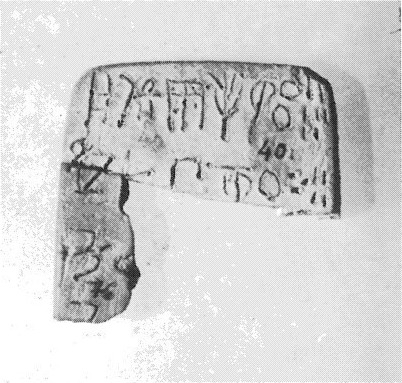
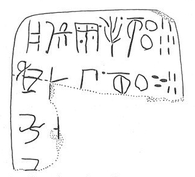

-
HT40
Names
HT40, HT 40
Support
Tablet
Location
Haghia Triada
Findspot
Villa Magazine


Scribe
HT Scribe 2
Context
Late Minoan IB
1500-1450 BCE
Dimensions
[4.40]
4.800
0.80
cm
GORILA OCR
Catalogue
HM 40
Hiraklion Museum
Readings
1 1 0 NU certain
1 1 0 DU certain
1 1 0 *331 certain
1 1 1 *900 certain
1 1 2 TE certain
1 1 3 *900 certain
1 1 4 GRA certain
1 1 5 200 certain
1 1 5 7 certain
2 2 6 KI certain
2 2 6 DA certain
2 2 6 TA certain
2 2 7 *900 certain
2 2 8 GRA certain
2 2 9 100 certain
2 2 9 30 certain
2 2 9 4 certain
3 3 10 KU certain
3 3 10 RO doubtful
4 4 11 KU certain
𐘯𐘬𐙷𐄁𐘃𐄁𐙉𐄚𐄍
𐘸𐘀𐘳𐄁𐙉𐄙𐄒𐄊
𐙂𐘁
𐙂
NUDU*331*900TE*900GRA2007
KIDATA*900GRA100304
KURO
KU
𐘯𐘬𐙷𐄁𐘃𐄁𐙉𐄚𐄍
𐘸𐘀𐘳𐄁𐙉𐄙𐄒𐄊
𐙂𐘁
𐙂
NUDU*331*900TE*900GRA2007
KIDATA*900GRA100304
KURO
KU
HT 40
, page tablet (HM 30) (GORILA I: 76-77)
Schoep 2002, type II (specialized commodities)
HT Scribe
2
|
side.line
|
statement
|
logogram
|
number
|
fraction
|
|
.1
|
NU-DU-*331
|
• TE • GRA
|
207
|
|
|
.2
|
KI-DA-TA •
|
GRA[]
|
134
|
|
|
.3
|
KU-
RO
[
|
|
|
|
|
.4
|
]KU[
|
|
|
|
|
|
infra mutila
|
|
|
|
.1: the only other occurrence of *331 might be on KH 32.1 (without the interior dots).
.4: GORILA a second KU-RO is possible but what it would refer to is not readily understood. Perhaps it is a mistake for KI-RO (cf. HT 123+124.b6 where KI-RO appears after KU-RO).
Commentary © John Younger
References
papers/GORILA-Vol1.pdf#page=112